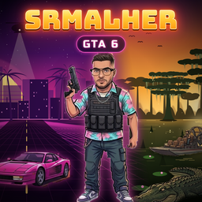

A personal Windows desktop app used by the creator SrMalher (@srmalher.gta6) to turn his own gameplay videos into short vertical clips and send them to his own TikTok drafts, YouTube Shorts and Instagram Reels.
user.info.basic).video.upload).Send a direct message to @srmalher.gta6 on TikTok or Instagram.